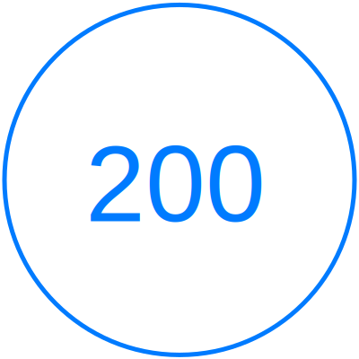

The number of short-term construction jobs for every 100 megaWatts of installed wind capacity.
The number of permanent operation and maintenance jobs created for every 100 megaWatts of installed wind capacity.
Positive Effects
Other than 5 countries, Texas has the highest capacity of wind energy making it cost effective. The wind turbines continue to create opportunities for jobs through the construction and maintenance of wind turbines.
For every 100 megawatts of wind energy, there are 7 jobs created to continue maintenance for permanent operations.
Landowners of wind turbines receive royalties and operating fees or monthly production payments as well.